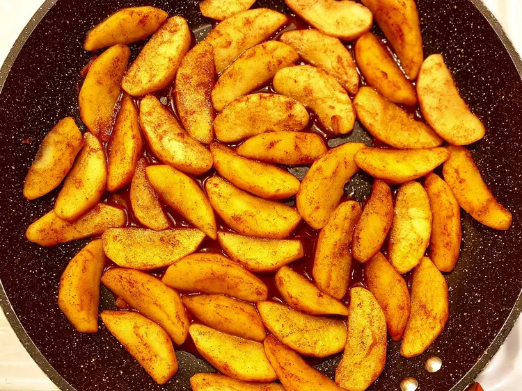

Stewed Apples
Description
A simple recipe for stewed apples. I prefer to use a sweet apple such as Honeycrisp but any apples will do. Great over ice cream, topped with whipped cream or by themselves.

Ingredients
- 3 apples - peeled, cored and sliced
- 1/4 cup water
- 2 tablespoons brown sugar
- 3 teaspoons pure maple syrup
- 2 teaspoons ground cinnamon
- 1 teaspoon vanilla extract
Directions
- Pour water into a large skillet. Arrange apple slices in the skillet. Add brown sugar, maple syrup, cinnamon, and vanilla extract to the skillet; stir to combine.
- Bring to a simmer and reduce heat to low. Simmer, stirring from time to time, until apples have reached desired tenderness, 20 to 30 minutes.